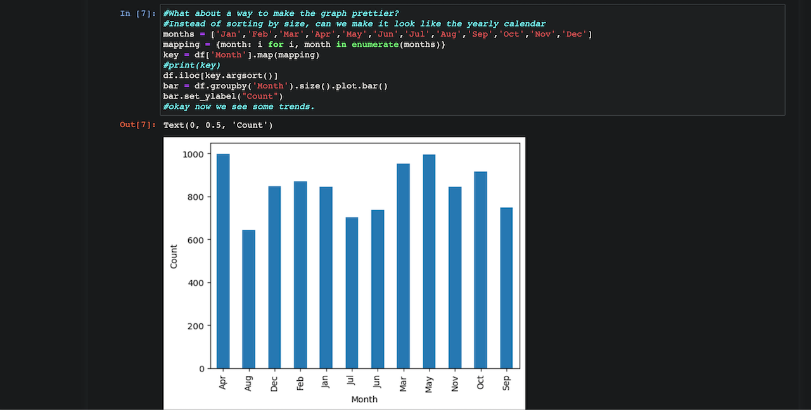
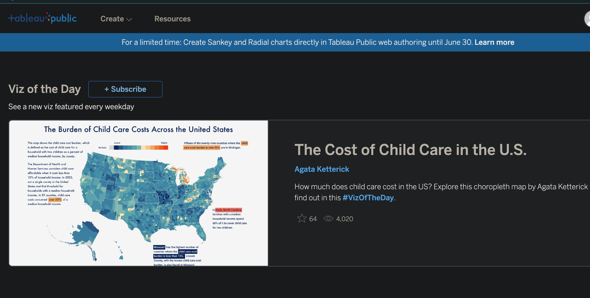
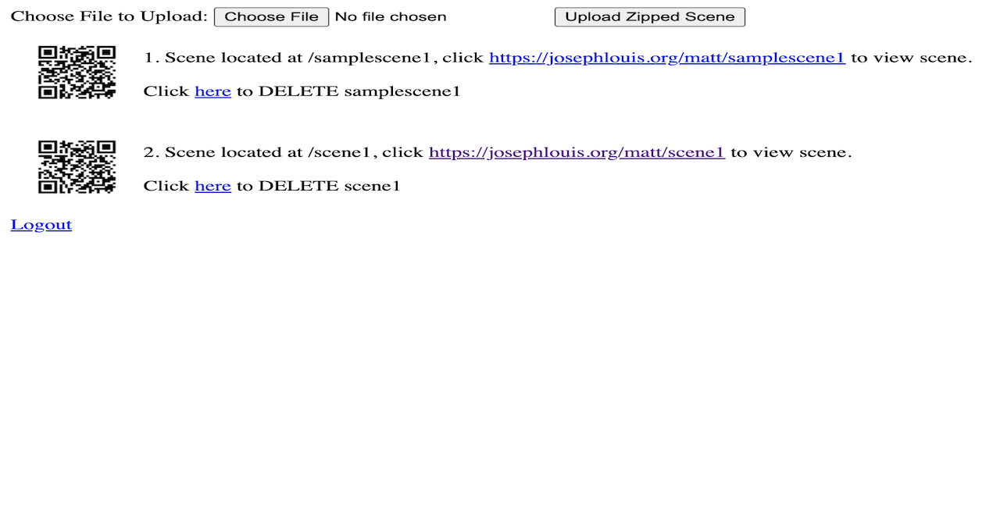
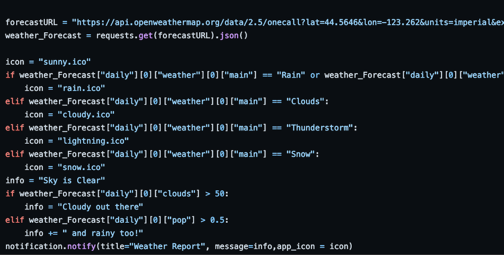

D's GitHub Pages Page
Why GitHub Pages?
It's important to learn new things, and everyone is doing GitHub pages today. I would love to be able to have a website for friends and employers to see.
What is this page coded in?
Right now, this title page is made using Bootstrap and Angular. It is likely that this page will be modified in the future, so expect changes!
Who am I?
I am a soon-to-be graduate from Oregon State University, with a Bachelors of Science in Computer Science, and a minor in Statistics. I'm interested in all kinds of software and development. Most of my degree focused on data science and statistics, but I've been exposed to and have experience with Android development, databases, parallel programming, game development, and of course web development!
Some of my previous work!
Analyzing True Crime Podcasts - Simple Anaconda/Pandas Project
This project was to get me familiar with Anaconda, Pandas, and using Jupyter Notebook. I've always been a little put off by Python due to some bad experiences, however it is an industry standard for a good reason. My statistics classes always preferred R, as in academics R is the standard. Learning to do the same things I've done in R in Python is humbling but important work. To start, I looked on popular Kaggle datasets, picked one that sounded interesting, and started getting to work to find trends and build visualizations.
Tableau Public - Learning the Basics and Why Taking Your Time Is So Important!
I've been doing research into the skills most companies want from a "Data Scientist", and it looks like the big ones are SQL, Excel, Python/R and of course, Tableau or Power BI. I was exposed to the first three in my degree, but Tableau? Power BI? Never heard of them! I was looking for ways to explore this field of study, but all the products are specifically for companies. How is someone supposed to learn this software if it costs a million dollars a month or needs a 500 dollar certificate? Turns out, Tableau Public is a thing, and is super cool. I hope to bring more visualizations to this platform.
Classroom VR For Heavy Civil Operations Capstone Project
In my Capstone project for the College of Engineering at Oregon State Univeristy, my team and I made a server hosting system for Professor Joseph Louis, of the College of Civil and Construction Engineering. He wanted an easy to use management system for Unity3D scenes, which would let him host those scenes and present them in class as problems for his students. Our job was to create the server management system, as well as setup the Unity3D export template, and providing sample scenes to test the server system with.
"COMPUTER!!! TELL ME THE WEATHER" Project
I was annoyed by the quickly changing weather around Corvallis, Oregon. It was always so hard what to tell I should wear each day. A normal person would just check the weather app, but I would always forget. Therefore, I created an automated system to tell me the exact weather conditions every morning, focusing specifically on whether or not there would be rain. I never forgot my coat again! Then I switched to Mac later that year, and didn't want to set it up with a whole new system.
Potato Messages Project For CS290
This project was for CS290 "Web Development", with Rob Hess. My team's final project was to create a full-stack web application. We decided to create a website where users could, as the title says, would let user's upload potato images and write potato messages. These would be stored on a JSON file on the server. When the page was loaded, images and messages would be displayed on the potato. While the site is no longer functional, the repository is still avaliable!